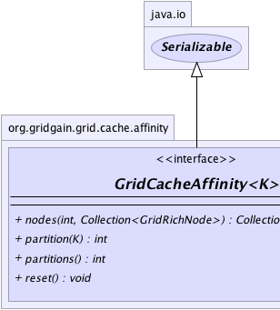
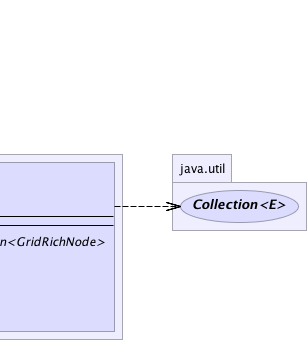

|
|

|

|
|

|

|

|
GridGain™ 3.6.0c
Community Edition |
|||||||||
| PREV CLASS NEXT CLASS | FRAMES NO FRAMES | |||||||||
| SUMMARY: NESTED | FIELD | CONSTR | METHOD | DETAIL: FIELD | CONSTR | METHOD | |||||||||
public interface GridCacheAffinity<K>
Cache key affinity which maps keys to nodes. This interface is utilized for
both, replicated and partitioned caches. Cache affinity can be configured
for individual caches via GridCacheConfiguration.getAffinity() method.
Whenever a key is given to cache, it is first passed to a pluggable
GridCacheAffinityMapper which may potentially map this key to an alternate
key which should be used for affinity. The key returned from
GridCacheAffinityMapper.affinityKey(Object) method is then passed to
partition(Object) method to find out the partition for the key. Then
this partition together with all participating nodes are passed
to nodes(int, Collection) method which returns a collection of nodes.
This collection of nodes is used for node affinity. In REPLICATED
cache mode the key will be cached on all returned nodes; generally, all caching nodes
participate in caching every key in replicated mode. In PARTITIONED
mode, only primary and backup nodes are returned with primary node always in the
first position. So if there is 1 backup node, then the returned collection will
have 2 nodes in it - primary node in first position, and backup
node in second.
For more information about cache affinity and examples refer to GridCacheAffinityMapper and
@GridCacheAffinityMapped documentation.
| Wiki | |
| Forum |
GridCacheAffinityMapped,
GridCacheAffinityMapper
|  |  |
| Method Summary | |
|---|---|
Collection<GridRichNode> |
nodes(int partition,
Collection<GridRichNode> nodes)
Gets affinity nodes for a partition. |
int |
partition(K key)
Gets partition number for a given key starting from 0. |
int |
partitions()
Gets total number of partitions available. |
void |
reset()
Resets cache affinity to its initial state. |
| Method Detail |
|---|
void reset()
int partitions()
0 inclusively to
N exclusively without any gaps.
int partition(K key)
0. Partitioned caches
should make sure that keys are about evenly distributed across all partitions
from 0 to partition count for best performance.
Note that for fully replicated caches it is possible to segment key sets among different grid node groups. In that case each node group should return a unique partition number. However, unlike partitioned cache, mappings of keys to nodes in replicated caches are constant and a node cannot migrate from one partition to another.
key - Key to get partition for.
Collection<GridRichNode> nodes(int partition, Collection<GridRichNode> nodes)
partition - Partition to get nodes for.nodes - Nodes to choose from.
|
GridGain™ 3.6.0c
Community Edition |
|||||||||
| PREV CLASS NEXT CLASS | FRAMES NO FRAMES | |||||||||
| SUMMARY: NESTED | FIELD | CONSTR | METHOD | DETAIL: FIELD | CONSTR | METHOD | |||||||||
|
GridGain - Real Time Big Data
|
|
|
|